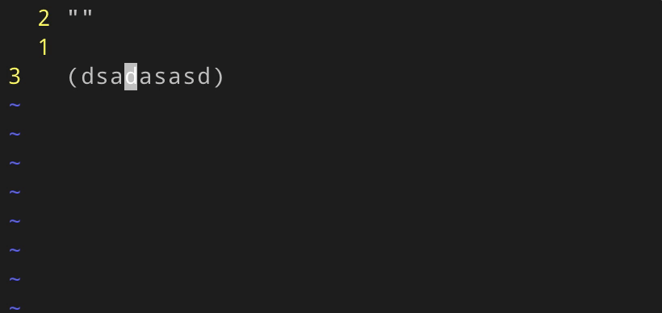
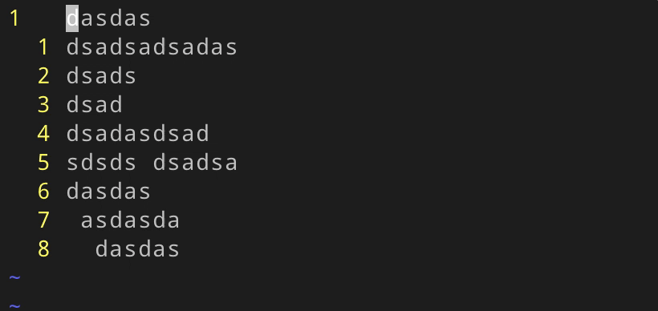

这里总结一些vim的快捷点技巧
编辑
如何选中引号等符号中的内容
拿双引号来举例：v+i+"

如何选中引号等符号及其中的内容
拿单引号举例：v+a+'

更加快捷选中(、[、{内容的方法
拿小括号举例：v+i+b

快速对多行进行操作

浏览
多窗口时改变窗口大小
输入’:’后，输入如下命令
改变上下高度
1 | resize +/-n |
改变水平宽段
1 | vertical resize +-n |
如何在tag间跳转
- 跳过去
ctl+] - 跳回来
ctl+o
居中、置顶和置底光标所在行
如果希望将光标当前行显示在屏幕中央该如何操作呢？zz即可，同类的还有：zt和zb，分别是置顶和置底
如果希望在置顶和置底时空出几行，可以在配置文件.vimrc中添加如下配置
1 | se so=3 |
光标滚动屏幕时底/顶部空行
在配置文件.vimrc中添加如下配置
1 | set scrolloff=10 |
插件
如何快速查看日历？
calendar-vim 可以满足你的需求，而且还可以把它变成日记本
:Calendar垂直方向打开日历 (\cal):CalendarH水平方向打开日历 (\caL):CalendarT全屏显示当月日历
如果把它作为日记本的话需要在家目录下创建 ~/diary 文件夹
进阶用法详见文档 :help calendar
其他
如何刷新vimrc配置
默认.vimrc的路径为~/.vimrc
1 | :source ~/.vimrc |